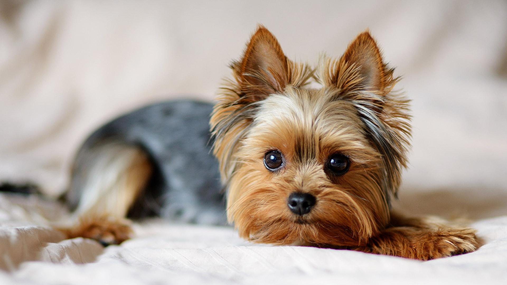

Перед покупкой щенка необходимо взвесит все за и против. Учесть породные особенности и прочие качества будущего члена семьи.
На что стоит обратить внимание:
Размер животного должен соответствовать площади квартиры. Стоит учитывать габариты взрослого питомца. Необходимо выбирать породу, которая соответствует темпераменту владельца. Для активных людей подойдут породы спортивного, охотничьего и охранного назначения. Спокойным и ленивым людям лучше обратить внимание на декоративных собак, которые не требуют постоянных нагрузок и длительных прогулок. Важным фактором является присутствие в доме других домашних любимцев и детей. Склонность к аллергии. Чистоту породы и стоимость питомца. Склонность к постоянному лаю. Финансовые возможности владельца играют важную роль не только при покупке щенка, но и в дальнейшем содержании. Следует учитывать траты на игрушки, предметы ухода, кормление, профилактические осмотры и прививки.
Для небольших квартир прекрасно подойдут карликовые породы. Они мало едят и не занимают много места. Взрослые собаки весят от 1.5 до 10 кг, рост не превышает 45 см в холке. Миниатюрным любимцам не нужны изнурительные прогулки и тренировки. Но в то же время малышам просто необходимо правильное воспитание и дрессировка.
Весёлые бородатые пинчеры быстро обучаются и адаптируются к жизни в квартире. Подходят для людей, которые большую часть времени проводят дома. Собаки требуют постоянного внимания и сильно скучают в одиночестве. Цена на щенка от 30 000.
Рекомендуется для людей склонных к аллергиям. Шерсть не имеет запаха, линька практически незаметна. Бишоны прекрасно обучаются, запоминают команды. При отсутствии воспитания могут проявлять такие качества, как доминирование, трусость, капризность. Цена от 25 тыс.
Английские охотники прекрасно показали себя в качестве компаньонов и семейных собак. Хорошо ладят с детьми, но не переносят присутствия других домашних любимцев. Для Бордеров другие животные — это предмет охоты. Максимальный вес взрослых породы 7 кг, рост до 40 см. Шерсть не линяет и не вызывает аллергию. Цена от 35 000.
Настоящие английские джентльмены обладают покладистым и добрым нравом. При отсутствии воспитания проявляют склонность к доминированию. Рост взрослых собак до 40 см, вес не больше 10 кг. Стоимость от 40 000.
Представители вида прекрасно ладят с детьми и другими питомцами. Взрослые собаки весят до 5 кг, рост 18–20 см. Хорошо обучаются и дрессируются. Единственный минус ярко выраженный охранный инстинкт. Купить щенка можно за 30-40 тыс.
Мини эрдельтерьеры весят всего 9-9.5 кг. Шерсть жёсткая и нуждается в специальном уходе. Подходят для квартиры, но требуют регулярных прогулок и активных игр. Легковозбудимые и имеют склонность к раскапыванию. Цена от 10 000.
Джеки подходят для активных людей. Джек-рассел-терьеры нуждаются в регулярных нагрузках и прогулках. Просты в дрессировке и содержании. Не требует специфических навыков в обучении, поэтому подходят для новичков. Щенки от 15 тыс.
Представители терьеров очень послушные и весёлые. Прекрасно уживаются со всеми членами семейства, но ревниво относятся к другим домашним любимцам. Шерсть требует качественного ухода и регулярного вычёсывания. Ценник на щенков от 15 000.
Разделяют два направления длинношёрстные и короткошёрстные. Шерсть не имеет запаха, линька практически отсутствует. Капризные и плохо поддаются дрессировке. Чрезвычайно общительные, поэтому не подходят занятым людям. Купить щенка можно за 20-30 тыс.
Очень преданные и чувствительные питомцы. Сильно привязаны к хозяину в эмоциональном плане. Вес взрослых животных до 5 кг, рост до 40 см. Стоимость щенков от 30 000.
Одна из древнейших декоративных пород. Из мальтийцев вырастают прекрасные компаньоны, которые идеально подходят для содержания в квартире. Болонки умные и отлично поддаются дрессировке. Минус склонность необоснованному к лаю. Стоимость от 35 000.
Считается одним из наиболее удачных питомцев для небольших квартир. Мопс подойдёт даже неопытным владельцам. Они могут подстраиваться под ритм жизни владельца и не нуждаются в частых прогулках и длительных физических нагрузках. Недостатком является склонность к ожирению, поэтому необходимо следить за питанием и соблюдать режим кормления. Цена от 8 до 40.
Очень общительные и энергичные папильоны нуждаются в постоянном внимании. Хорошо ладят с детьми и другими питомцами. Плохо переносят одиночество, могут впасть в продолжительную депрессию. Отличительная внешняя черта — это большие ушки, которые покрыты длинной шерстью. Стоимость от 20 000.
Пекинесы так же, как и мальтийские болонки являются одной из древнейших декоративных пород. Подходят домоседам, так как не нуждаются в длительных прогулках. Длинная шерсть требует качественного ухода. Некоторые владельцы подстригают питомцев, чтобы исключить ежедневные вычёсывания. Цена от 10 тыс.